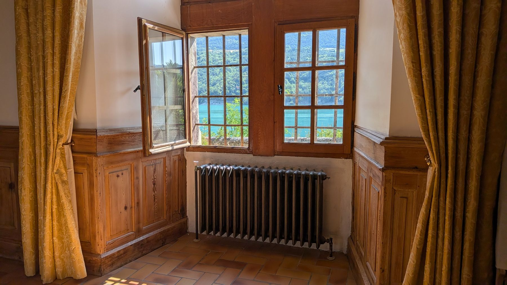

The château, room by room.
Over 400 years of history, vaulted cellars, drawing rooms with beamed ceilings and grounds that run down to the lake. And armchairs you’re actually allowed to sit in.
- 13bedrooms
- 10–100people
- 40 minfrom Grenoble

Four centuries, one lake
Herbelon was built as a stronghold during the Wars of Religion. The lake came much later, and changed everything.
- 16th centuryDuring the Wars of Religion, Catholics hold the road south through the Trièves. Herbelon is one of their strongholds.
- 1603The Sarrazin family, lords of Treffort, build the château.
- 17th-18th centuriesIt passes by inheritance to the Armand family, then the Ravier family. André Claude Ravier sets up tileworks in Treffort and represents the nobility in 1788.
- 1962The Monteynard dam floods the Drac valley. The château finds itself above a turquoise lake.
- TodayOffsites, weddings and retreats from September to June; hotel, restaurant and guinguette in summer.
The bedrooms
13 bedrooms, sleeping 39, and no two alike. Each is named after a plant and has the character of a woman of the house. Each has its own bathroom and sleeps two to six.
 N° 1Marguerite
N° 1Marguerite N° 2Capucine
N° 2Capucine N° 3Iris
N° 3Iris N° 4Cyprès de Lambert
N° 4Cyprès de Lambert N° 5Valériane
N° 5Valériane N° 6Camélia
N° 6Camélia N° 7Gentiane
N° 7Gentiane N° 8Albizia
N° 8Albizia N° 9Dahlia
N° 9Dahlia N° 10La suite Herbelon
N° 10La suite Herbelon N° 11Trèfle
N° 11Trèfle- N° 12Magnolia
- N° 13Églantine
The spaces
| Space | Size | Good for |
|---|---|---|
| Vaulted cellars | 220 m² | Talks, performances, parties, big collective moments |
| Three drawing rooms | 60 m² each | Meetings, group work, meals by the stone fireplace |
| Activity room | 60 m² | First floor. Yoga, meditation, workshops, breakout groups. Old parquet floor, lake view |
| Covered terrace | 40 seated | Lunch and dinner facing the lake |
| Wooded grounds | 3 000 m² | Breaks, drinks on the lawn, direct access to the lake |
| Bedrooms | 13 | Each one different, each with its own bathroom |


The small things, already taken care of
- Help yourselfCoffee, tea and fresh water in the drawing room with the fireplace.
- Places to unwindHammocks, deckchairs, a reading corner, a games table.
- For your gearA gear room by the water for boards, bikes and wetsuits.
- In every roomBed linen and towels, toiletries, wifi and heating. No TV or kettle: coffee and tea are in the drawing room.
- Arrival and departureCheck-in from 4 pm, check-out by 11 am. Rooms are cleaned every three days, or more often if you ask.
- For everyoneNon-smoking rooms, pets welcome, extra beds and cots free.
Getting here
1605 route d’Herbelon, 38650 Treffort
- By car40 minutes south of Grenoble. A51, exit 13, then follow Lac de Monteynard / Treffort. Free parking on site.
- By trainMonestier-de-Clermont station, then a short taxi ride. Tell us your arrival time.

Practical information
Is the château wheelchair accessible?
Not yet: no bedroom or toilet is adapted today. We’re working on it; call us to talk through your needs.
Is there parking?
Yes, about 40 free spaces on site. There is no EV charging point.
How do we get there without a car?
By train to Monestier-de-Clermont station, then a short taxi ride. For a group, we can look into a transfer.
Are pets allowed?
Yes, for every stay and event (€12 a night at the hotel in summer).
Want to see it in person?
We’re happy to show you around. Tell us when you’re coming.